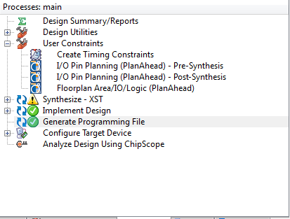

Controlando um ESC com FPGA
Usando Kit da Avnet Xilinx Spartan 3A Evaluation Kit
1 - Funcionamento do ESC
O funcionamento do ESC é relativamente simples. Ele usa o sistema de controle por PPM ( Pulse Position Modulation ou Modulação por Posição de Pulso), é um sistema semelhante ao PWM ( Pulse Width Modulation ou Modulação por Largura de Pulso) porém não necessita de uma precisão grande.
O funcionamento é basicamente o seguinte, você tem um ciclo de 18 a 20 ms, onde 1 a 2 ms é tOn (Tempo Ligado, ou sinal Lógico 1) e 18 a 19 ms de tOff (Tempo Desligado, ou sinal lógico 0), como representa o gráfico abaixo:
Sendo o mínimo do sinal tOn 1ms e o máximo 2ms, a velocidade do motor no ESC é feita através da duração do tOn acima de 1ms e abaixo de 2ms. Pode-se fazer uma associação assim:
1ms => 0%
2ms => 100%
logo
1.5ms => 50%
Entenderam? É bem simples. O período da onda pode ser qualquer coisa entre 18 e 20ms, o importante para o ESC é o tOn.
2 - Idealizando a programação
Vamos agora idealizar um programa que faça essa variação. No FPGA teremos uma fonte de clock (No exemplo aqui 16MHz), dois botões para o controle (Um para aumentar a velocidade, e um para diminuir) e dois leds para referências (Um será usado para detectar que o programa está rodando e outro será a visualização do PPM).
Primeiro iremos dividir esse clock de 16MHz por 1000 para formar um de 16kHz que tem como período 62.5us. Faremos agora outra divisão para fazer um contador de milesegundos, para isso basta dividirmos o clock que conseguimos por 16. (16 * 62.5us = 1000us = 1ms)
Como o contador de milesegundos tem 16 posições, podemos usar essas 16 posições para controlar a velocidade, gerando assim 16 velocidades em teoria (na pratica não é bem 16). Armazenaremos o valor da velocidade no registrador de velocidade.
Temos também de fazer um relógio que conte até 20, para contar o tempo do pulso.
Feito isso, faremos comparações:
1 - Se a posição do relógio for 0, a saída PPM será nível lógico 1.
2 - Se a posição do relógio for 1 e o contador de posições for igual ou menor que o valor do registrador de velocidade, a saída PPM será nível lógico 1.
3 - Caso não seja nenhuma das duas acima, a saída PPM será nível lógico 0.
Com estas comparações, já fizemos a saída PPM funcionar de acordo com a velocidade. Porém ainda falta o sistema para incrementar e decrementar o registrador de velocidade. Para isso iremos usar o botão 1 para incrementar, e botão 2 para decrementar. Porém só pode se incrementar/decrementar uma vez com o botão apertado, e para incrementar/decrementar novamente, é necessário soltar o botão novamente. Então teremos que criar dois registradores para gravar o ultimo estado do botão. Adicionalmente, vamos fazer a verificação se o registrador de velocidade já está nos seus valores máximo (16) e mínimo (0). Faremos as seguintes comparações:
1 - Se o botão 1 estiver apertado, e o registrador de estado do botão 1 for nível lógico 0, verificar se o registrador de velocidade não está no máximo e incrementar o registrador de velocidade.
2 - Se o botão 2 estiver apertado, e o registrador de estado do botão 2 for nível lógico 0, verificar se o registrador de velocidade não está no mínimo e decrementar o registador de velocidade.
3 - Se o botão 1 não estiver apertado, e o registrador de estado do botão 1 for nível lógico 1, zerar o registrador de estado.
4 - Se o botão 2 não estiver aperto, e o registrador de estado do botão 2 for nível lógico 1, zerar o registrador de estado.
Com tudo isso, estamos prontos para iniciar a programação!
3 - Programando
Abra o Xilinx ISE e vá em File -> New Project,
Preencha o Nome do projeto e o local de trabalho como desejar. Clique em Next
Acerte as configurações para o seu FPGA, se o teu kit for o mesmo do que o meu (Avnet Xilinx Spartan 3A EVL Kit) as configurações estão listadas na imagem. Clique em Next.
Aqui estará as configurações para a criação do projeto, apenas clique em Finish.
Após isso você estará no workspace do seu projeto recém criado. Precisamos criar um arquivo com o código a ser compilado para o FPGA. Para isso vá em Hierarchy e clique com botão direito e vá em New Source.
Na janela que irá abrir, em Select source type, selecione Verilog Module, e em File name coloque main. Clique em next.
Agora iremos definir as entradas e saídas do código. Iremos criar 3 entradas e 3 saídas, sendo elas:
Entradas: clk => Entrada do Clock de 16MHz button1 => Botão para aumentar a velocidade button2 => Botão para diminuir a velocidade Saidas:led1 => Led para amostragem visual do PPM led2 => Led para mostrar o programa rodando ppm => Saída PPM para o ESC
Clique em Next
Será agora exibido o sumário do código criado. Apenas clique em Finish
Após isso você estará em uma tela semelhante a essa:
Agora vamos a programação do controlador. Iniciaremos definindo parâmetros e registradores. Abaixo tudo que precisamos definir, com seus devidos comentários:
parameter clkdividermax = 1000; // 16MHz / 1000 = 16kHz = 62.5us //Para 1ms = 16 clocks. 62.5 * 16 = 1000 us = 1ms parameter clockpositionmax = 20; //20ms maximos para o relógio reg [9:0] clkdivider = 0; // Contador para dividir o clock, 2^10 = 1024 reg [3:0] position= 0; // Overflow com 1ms 4 bits 2^4 = 16 clocks para 1 ms; reg [4:0] clkpositioncounter= 0; // Posição do clock 2^5 = 32, porém só usamos até 20. reg [3:0] speed = 0; // Registrador para a velocidade, 2^4 = 16 velocidades em teoria wire dividermax = (clkdivider == clkdividermax); // Detecção da posição maxima do contador wire positionmax = (position == 15); // Detector de overflow wire clkpositionmaxed = (clkpositioncounter == clockpositionmax); //Detecção da posição maxima do relógio
reg ppmtmp; // Registrador para a saida PPM
Com isso, definimos tudo que vamos usar na rotina de contagem/divisão de clock e também na geração do PPM. Vamos então a programação da rotina para gerar o PPM.
//Rotina de contagem e geração do PPM always @(posedge clk) begin
if(dividermax) clkdivider <= 0;// Se o contador de divisão chegar o limite, ele será resetado else clkdivider <= clkdivider +1; // Se não, incrementar.
if(dividermax) //Incrementar um no contador de milesegundos quando o contador de divisão chegar ao limite. position <= position+1; if(position == 15) // Quando o contador de milesegundos marcar um milesegundo, começar o processo do relógio begin if(clkpositionmaxed)
clkpositioncounter <= 0; //Se o contador do relógio chegar a 20ms ele será resetado. else clkpositioncounter <= clkpositioncounter + 1; // Caso não, será incrementado position <= 0; // Resetar o contador de milesegundos
end //Se o contador de milesegundos for igual ao registrador de velocidade E estiver no primeiro milesegundo do relógio //Ou a posição do relógio for 0, a saida do PPM será 1, caso não, será 0 if(((position <= speed) & clkpositioncounter == 1) | clkpositioncounter == 0) ppmtmp <= 1; else ppmtmp <= 0; end
Com isso temos o PPM gerado corretamente, mas ainda precisamos fazer a rotina que incremente e decremente o registrador de velocidade quando pressionado os botões.
//Rotina de incrementação e decrementação do registrador de velocidade. reg button1pressed, button2pressed; // Registradores para armazenar o estado do botão. wire speedmax = (speed == 15); // Detecção do valor máximo do registrador de velocidade wire speedmin = (speed == 0); // Detecção do valor mínimo do registrador de velocidade always @(posedge clk) begin if(button1 & ~button1pressed) //Se o botão 1 está pressionado, e ele não estava no ciclo passado begin if(~speedmax) //Se o registrador de velocidade não estiver no maximo, incremente speed <= speed + 1;
button1pressed <= 1; //Marca que o botão 1 foi pressionado end if(button2 & ~button2pressed) //Se o botão 2 está pressionado, e ele não estava no ciclo passado begin if(~speedmin) //Se o registrador de velocidade não estiver no mínimo, decremente speed <= speed - 1; button2pressed <= 1; //Marca que o botão 2 foi pressionado end if(~button1 & button1pressed) //Se o botão 1 não estiver pressionado, e no ciclo anterior ele estava, resetar o estado do botão button1pressed <= 0;
if(~button2 & button2pressed) //Se o botão 2 não estiver pressionado, e no ciclo anterior ele estava, resetar o estado do botão button2pressed <= 0; end
Agora temos um programa funcional, onde o PPM será gerado baseado no registrador de velocidade speed e a cada toque no botão button1 o registrador será incrementado até o seu valor máximo, e a cada toque no botão button2 o registrador será decrementado até seu valor mínimo. Após isso só resta fazer as associações entre registradores e saidas.
assign ppm = ppmtmp; // Associar saida PPM ao registrador ppmtmp assign led1 = ppmtmp; // Associar o primeiro led ao registrador ppmtmp assign led2 = 1; //Associar o segundo led ao nível logico 1
Terminamos aqui o programa para gerar o PPM. Iremos agora compila-lo e gravar no FPGA.
4 - Gerando associações de pinos e compilando programa
Vamos agora associar os pinos virtuais aos pinos reais e compilar o programa. Em Processes: main , abrir a aba User Constrains e clicar em I/O Pin Planning (PlanAhead) Pre-Synthesis. Clique Sim no aviso que aparecer.
Após isso, será aberto o PlanAhead que dentre outras funções, faz a associação dos pinos virtuais com os reais.
Clique em Scalar Ports (6) e após estar selecionada todas as portas clique com o botão direito e vá em Configure I/O Ports.
Após ir em Configure I/O Ports mude o I/O Standard para LVCMOS33 e clique em OK.
Feito isso, as portas estão configuradas para trabalhar a 3.3V e não 2.5V como pré-definidas pelo programa. Apesar do ESC funcionar com 5V, 3.3V ainda é considerado nível lógico 1 para um circuito TTL 5V. E como não há comunicação de volta do ESC, não há problemas em se usar 3.3V.
Agora é necessário fazer as associações dos pinos. Este mapa colorido chego de bolas, quadrados e hexagonos é o FPGA visto por baixo. Ai estão todos os pinos com coordenadas horizontais de 1 a 16 e verticais de A a T. Para associar o pino, basta seleciona-lo em Scalar Ports e arrasta-lo até o pino determinado. Caso esteja usando o mesmo kit que eu, faça as seguintes ligações:
button1 => K3
button2 => H5
clk => C10
led1 => D14
led2 => C16
ppm => B4
Feito isso, os pinos estarão mapeados correntamente.
Após isso, basta clicar em Salvar no canto esquerdo superior da tela.
Vamos agora descrever o clock principal para o compilador. Para isso vá em Processes: main e clique em Create Timing Constrains
Altere os campos em branco a direita para:
TIMESPEC Name* => TS_CLK_16MHZ
Clock Net* => clk
Period => 62.5 ns
Duty Cycle => 50%
Edge => High
Pronto! O clock está configurado. Clique em main.v na aba inferior da direita e Design na aba inferior da esquerda. Vamos agora compilar o programa! Em Processes: main clique em Generate Programming File. Aguarde até que o programa esteja compilado.

Feito isso, terminamos a produção do programa! Agora é só gravar no FPGA!
5 - Gravando programa no FPGA
Conecte o kit ao computador e abra o software de gravação (caso seja o kit da Avnet, abra o Avnet Board Programming Utility).
Clique em Connect to COMX. Após a conexão, clique em browse e selecione o arquivo main.bit que está na pasta do seu projeto.
Após isso clique em Configure FPGA e se iniciará o processo de gravação. Após gravado conecte o GND (Fio preto) do ESC no GND da placa e o Fio branco (Controle) no pino B4. Ligue a energia ao ESC e você notará um apito no motor. Isso é normal, demonstra que está tudo funcionando correntamente. Clique no Botão PUSH_A para aumentar a velocidade e PUSH_B para reduzir a velocidade.
Pronto! Tudo funcionando corretamente, agora use a sua criatividade e coloque mais recursos neste programa!
Video:
Programa Completo:
Por: Lucas Teske

Esta obra de EnergyLabs Brasil, foi licenciada com uma Licença Creative Commons - Atribuição - Partilha nos Mesmos Termos 3.0 Não Adaptada.
Permissões adicionais ao âmbito desta licença podem estar disponíveis em http://www.energylabs.com.br.